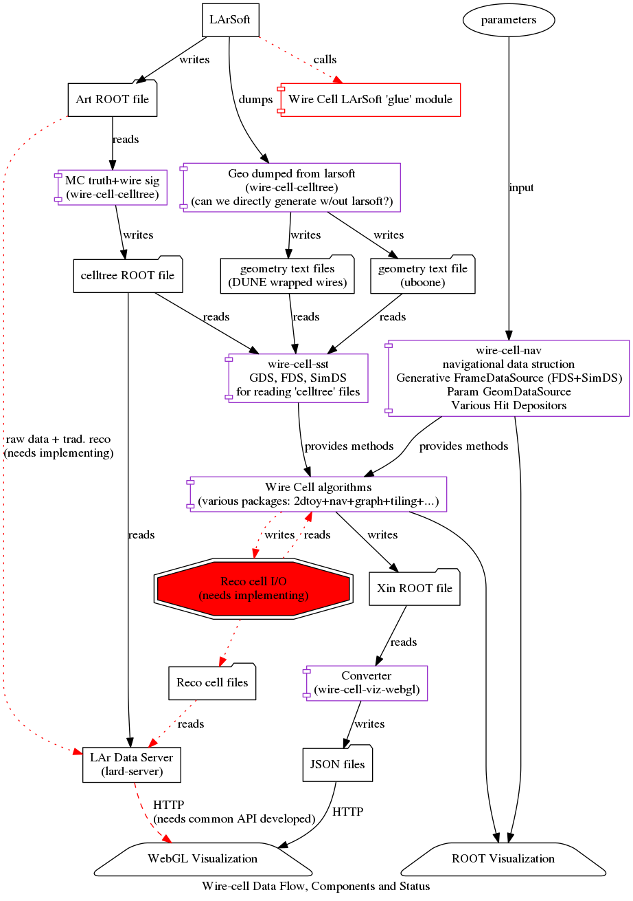

An overview of the system with indications of current status and near term plans is given as a diagram below.

([PNG], [PDF], [DOT] and for clickable links open [SVG])
{kind=link}
{kind=link}
The legend for this diagram is:
-
dotted line : this step is missing and needed.
-
dashed line : this step exists but is not captured so that anyone can perform it.
-
solid line : this step exists, documented to some extent and anyone can reproduce it (eg, it's in GitHub).
-
yellow : this process exists but is not generally known/available.
-
red : this process does not exist or is just conceptual and is needed soon.
-
folder shape : some file or file types
-
component shape : some software package
-
rectangle shape : a program
-
trapezoid shape : visualization or end-user application
Terms
These terms are used with specific meanings in Wire Cell
-
coordinate system : electrons drift in the negative-X direction toward the wire planes, Y points upward and is sometimes referred to as W, Z follows from the right-hand-rule. U and V directions point at some angle w.r.t. W and are in the W-Z plane.
-
tick : the unit of digitized time.
-
tbin : one bin of time of some integral number of ticks
-
wire plane : a two-dimensional extent in the Y-Z plane which is perpendicular to the drift direction. There is a U, V and W (aka Y) wire plane which contains wire segments. Each of these planes are slightly offset in the drift direction X.
-
charge : refers to an amount of charged particles drifting past the wire plane during one tick. Sometimes used to refer to the deconvolved ADC in one tick which provides a measure of the charge. Sometimes used to refer to the un-deconvolved signal. Yes, it's confusing.
-
wire : a segment or run of the conductor which senses the passing of drifting charge. A wire runs in either the U, V or W (aka Y) direction.
-
channel : the unit of electronics responsible for digitizing charge on a wire. For detectors with wrapped readout conductors a single channel maps to multiple wires.
-
cell : a region of the plane surrounding an area near where three wires, one from each plane, are crossing (at least pairwise, if not in a triple-point).
-
tiling : the set of cells which fully cover the plane with no gaps nor overlaps. There is more than one way to tile the plane.
-
blob : an association of continguous cells which is expected to contain a portion of the charge of the event from one tbin. In general, the association will include cells which may not actually contain charge. A blob is bounded by cells (or plane boundaries) which definitely do not contain charge.
-
blob cluster : an association of a number of blobs, potentially from different tbins, which intend to capture an extended portion of charge that came from the passage of a single particle (track) or multiple, closely related particles (shower).
-
slice : a qualifier to indicate information from one tbin. A wire slice would indicate the collection of charge collected on wires at a given time.
-
frame : the collection of slices readout as a continuous unit from the DAQ.